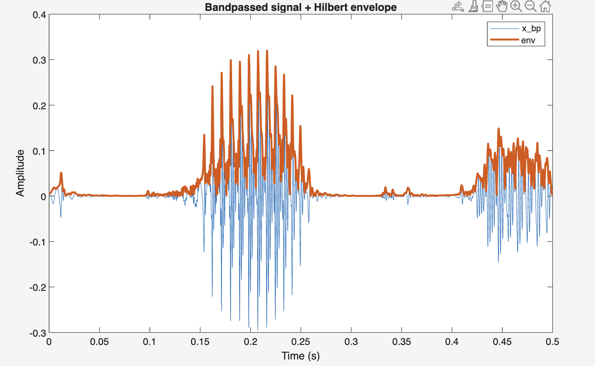
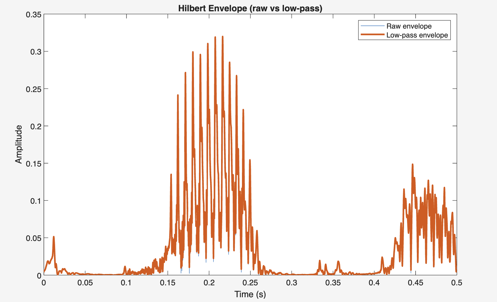
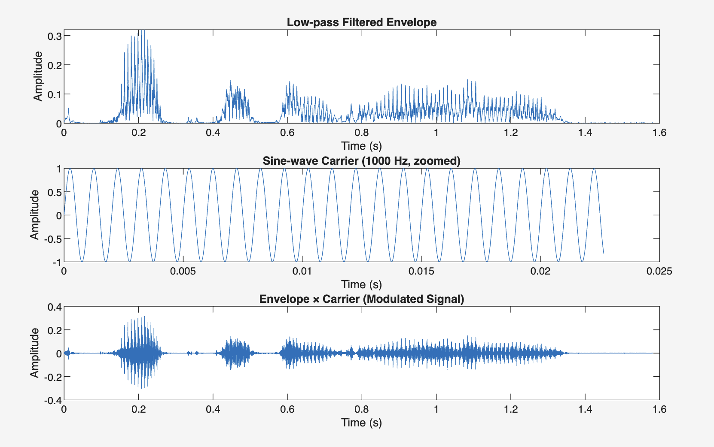
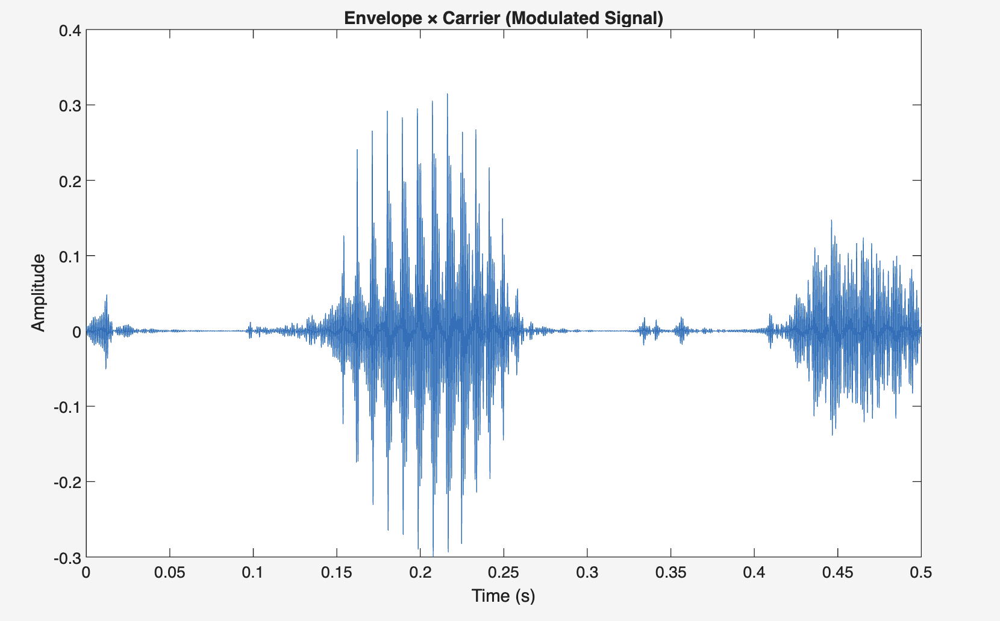
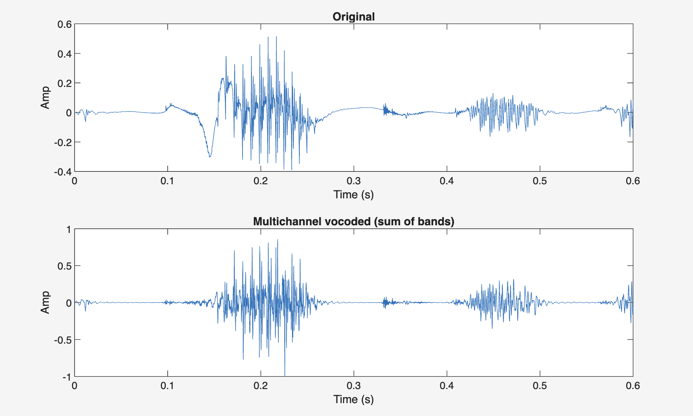
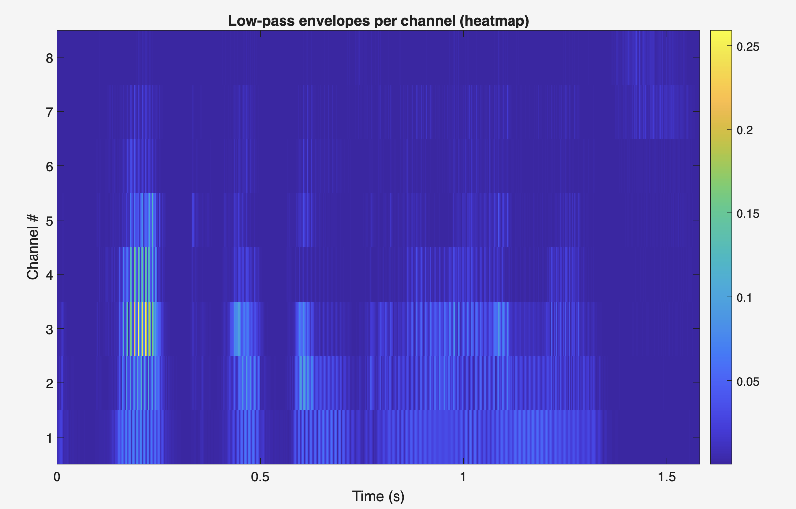
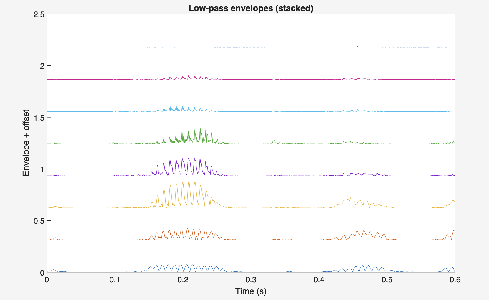

Matlab · Signal Processing · Biomedical Engineering · 2025
Cochlear Implant
Vocoder Simulation
Overview
This project explores how cochlear implants transform sound — and what that transformation means for human perception. Cochlear implants don't restore normal hearing. Instead, they deliver a highly simplified version of sound by breaking it into a small number of frequency channels and transmitting only the most essential information.
While this is often enough for speech understanding, it comes at the cost of spectral detail — making things like pitch and music much harder to perceive. I built a cochlear implant vocoder in MATLAB to simulate this degradation. This work was completed under the supervision of Raymond Goldsworthy in the Cochlear Implant Lab at USC.
Temporal envelopes are enough for speech. They are not enough for rich auditory experience.
Listen — Audio Comparison
The phrase being processed: "The park opens in eleven months." Listen to how it sounds at each stage of cochlear implant processing — from the original recording through to the final multi-channel vocoded output.
Original
Unprocessed speech signal — the reference
Low-pass filtered
Low-frequency content only
High-pass filtered
High-frequency content only
Multi-channel vocoded
8-channel cochlear implant simulation — the final output
Signal Processing Pipeline
Both vocoders follow the same four-stage architecture, mirroring how cochlear implants process sound in real devices. Each stage strips away a layer of complexity, leaving only what the implant can transmit.
The final stage (highlighted) is where pitch information is permanently discarded — the defining trade-off of cochlear implant processing.
The multi-channel version implements Greenwood frequency spacing — a mathematically derived mapping mirroring the tonotopic organisation of the human cochlea, making the simulation biologically accurate rather than just computationally convenient.
Single-Channel Model — Step by Step
The single-channel model is the most extreme case of information loss — the entire audio spectrum collapsed into one band, making the processing steps visible and audible in isolation.

Bandpassed signal (blue) with Hilbert envelope (orange) — tracing the energy contour of speech.

Raw Hilbert envelope vs low-pass filtered at 400 Hz — smoothing discards fine spectral detail.

Modulated output: envelope × 1000 Hz sine carrier. Rhythm preserved; pitch gone.

Three-panel view: envelope, 1000 Hz carrier (zoomed), and modulated output.
Multi-Channel Model — Results

Spectrogram: original (top) vs 8-channel vocoded (bottom). Fine harmonic structure is largely gone.

Waveform comparison — temporal shape preserved as spectral detail is lost.

Envelope heatmap across 8 channels — energy concentrates in lower channels.

Stacked envelopes — each channel's amplitude contour offset for clarity.
MATLAB GUI
The simulation was built with a custom MATLAB GUI — allowing real-time adjustment of the number of channels, frequency spacing method, envelope cutoff, and carrier type. The interface makes it possible to audition changes instantly and observe how each parameter affects the vocoded output.
MATLAB GUIs (App Designer .mlapp files) run natively in the MATLAB environment and cannot be embedded directly in a web browser. To explore the vocoder interactively, the MATLAB source files are available on request.
Reflections
The key realisation was how asymmetric the information requirements for hearing actually are — temporal envelopes, which carry very little data, are sufficient for speech intelligibility. But the fine spectral structure that envelopes discard is exactly what makes music and pitch recognisable.
Working in the Cochlear Implant Lab also introduced me to the idea of multisensory integration — combining auditory and tactile signals to improve pitch perception for cochlear implant users. This connects the simulation work directly to ongoing experimental research.